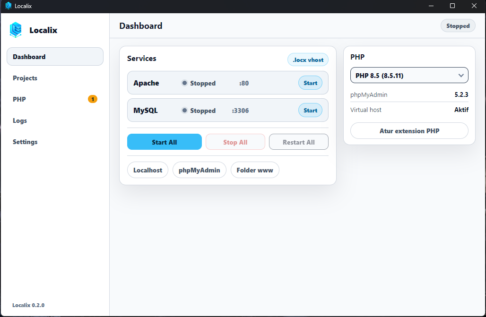
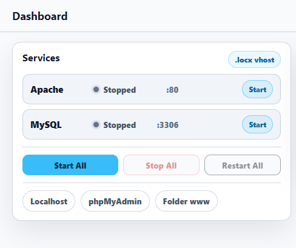
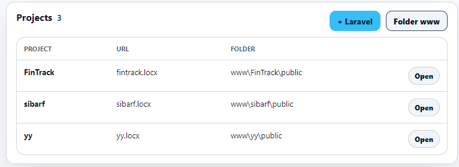
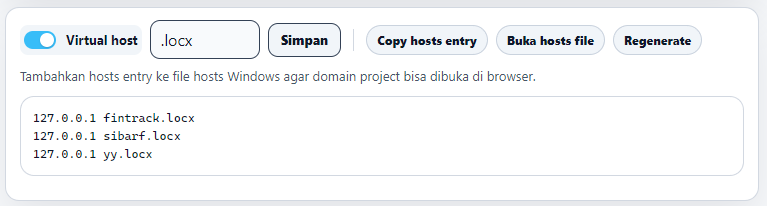
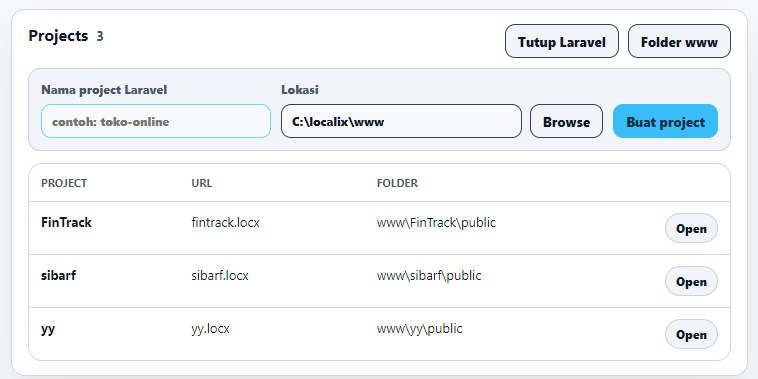

Apache, PHP, MySQL, dan phpMyAdmin dalam satu aplikasi desktop. Taruh project di folder www, klik Start All, dan mulai coding.

Tur singkat
Lima halaman, tanpa menu yang membingungkan: Dashboard, Projects, PHP, Logs, dan Settings.
Jalankan Apache dan MySQL bersamaan atau satu per satu. Status dan port terlihat jelas, tanpa perintah terminal.
www
Setiap folder di www langsung muncul di halaman Projects, lengkap dengan URL dan foldernya. Tidak ada yang perlu didaftarkan.
public
Aktifkan Virtual Host dan setiap project mendapat domain sendiri, misalnya toko.locx. Localix menulis konfigurasi Apache untuk Anda.
.locx)
Klik + Laravel, isi nama project, lalu Buat project. Localix menjalankan Composer dengan PHP bawaannya, jadi tidak perlu memasang apa pun di Windows.
php artisan dan composer dari terminal
Baru di v0.2.0
Pasang, perbarui, dan ganti versi dari halaman PHP. File diunduh dari situs resmi PHP dan dicek SHA-256 sebelum dipakai. Jika Apache gagal start, versi sebelumnya dipulihkan otomatis.
Dan juga
Aktifkan extension, atur memory limit, upload, timezone, dan OPcache. Perubahan diuji dulu sebelum diterapkan.
Log Localix, Apache, MySQL, dan PHP bisa dibaca dan dibersihkan dari halaman Logs.
Project (www), database (data), dan pengaturan (config) tetap aman saat Localix diperbarui.
Port 80 bentrok dengan aplikasi lain? Settings menunjukkan port mana yang terpakai, dan port Apache/MySQL bisa diganti.
Apache dan MySQL berjalan sebagai proses Localix, bukan service sistem. Tidak ada yang tertinggal di Windows.
Pakai installer biasa, atau jalankan versi portable dari folder mana saja, termasuk flashdisk.
Dari XAMPP?
Struktur foldernya mirip. Yang berubah hanya tempat project dan cara mengelola server.
.sql.htdocs ke folder www Localix..sql tadi.Transparan
Localix belum ditandatangani dengan sertifikat berbayar, jadi SmartScreen bisa menampilkan "Windows protected your PC". Klik More info lalu Run anyway.
Unduh hanya dari GitHub Releases, dan cocokkan checksum file dengan SHA256SUMS.txt.
FAQ
Ya. Tanpa langganan, tanpa fitur premium, tanpa lisensi berbayar.
Windows 10 dan Windows 11, 64-bit. Tersedia installer dan versi portable.
Bisa. PHP 8.4 sudah disertakan, dan 8.2, 8.3, atau 8.5 bisa dipasang dari halaman PHP. Satu versi aktif dalam satu waktu, dan bisa diganti dari dasbor atau menu tray.
Cek dengan Check Ports di Settings, lalu tutup aplikasi tersebut atau ganti port Apache, misalnya ke 8080.
Username root dengan password kosong. phpMyAdmin hanya bisa dibuka dari komputer Anda sendiri (localhost).
Gratis, ringan, dan siap dipakai dalam dua menit.